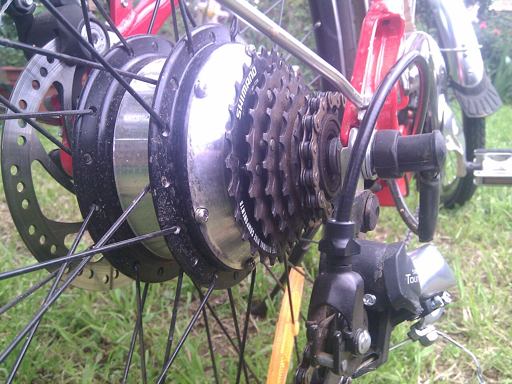
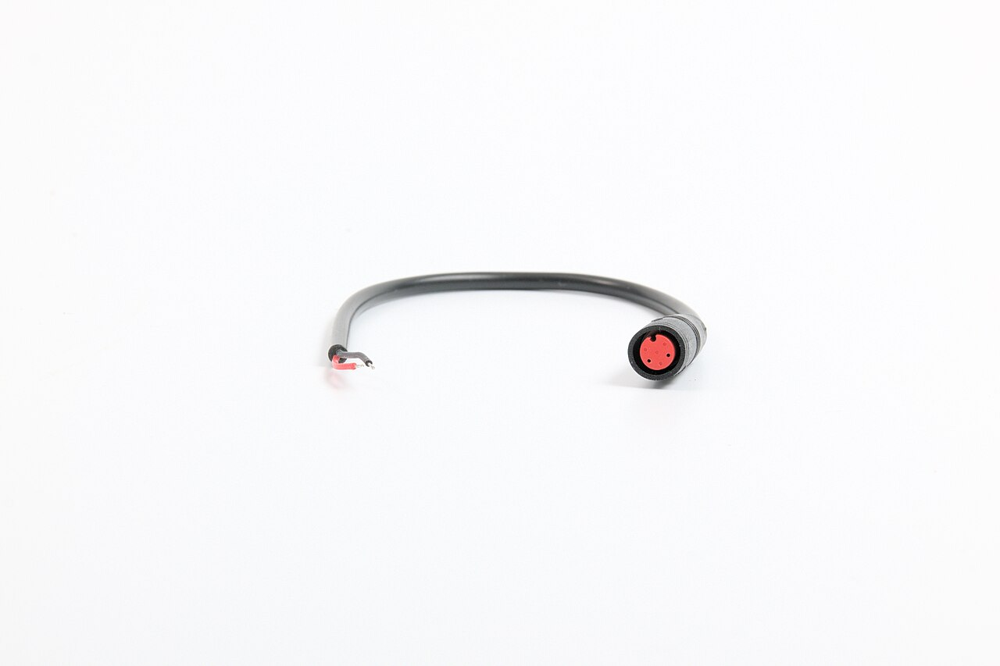
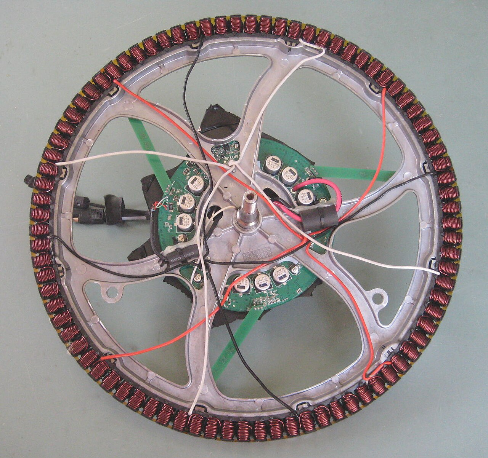
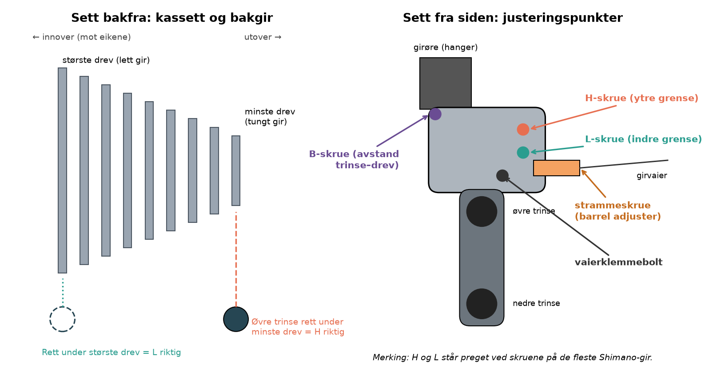
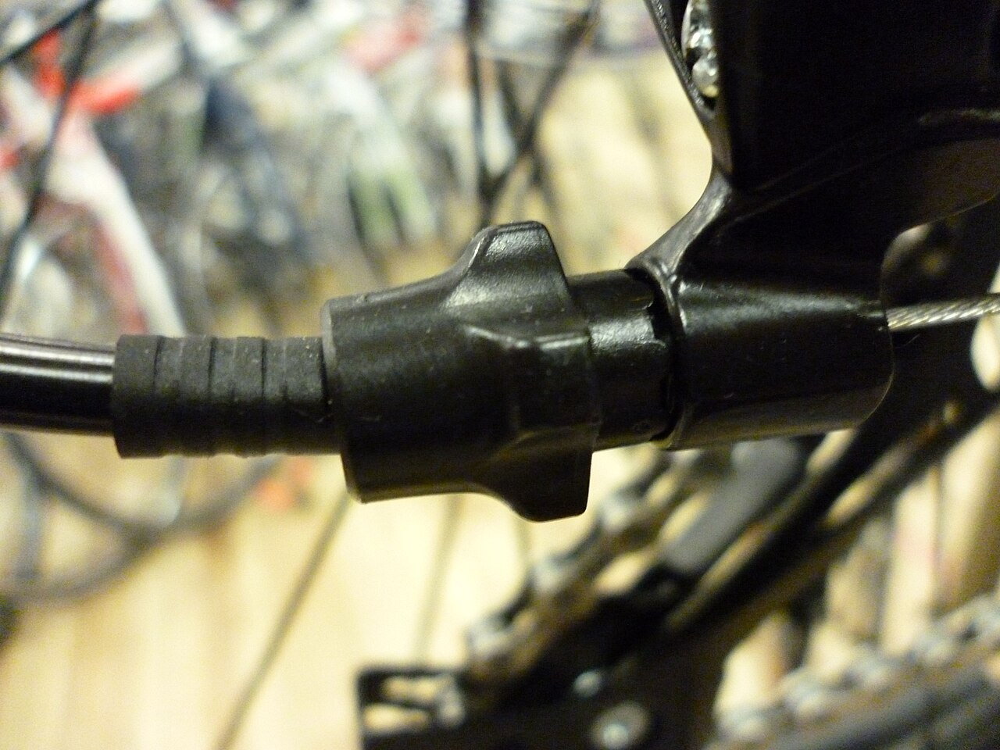
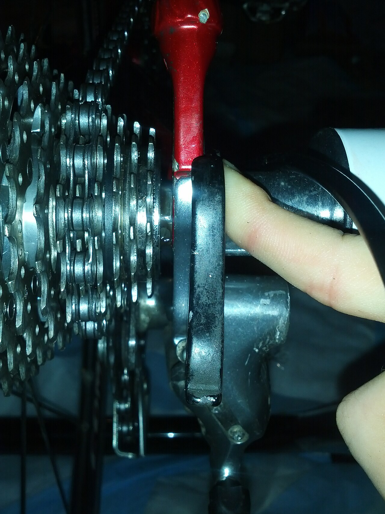
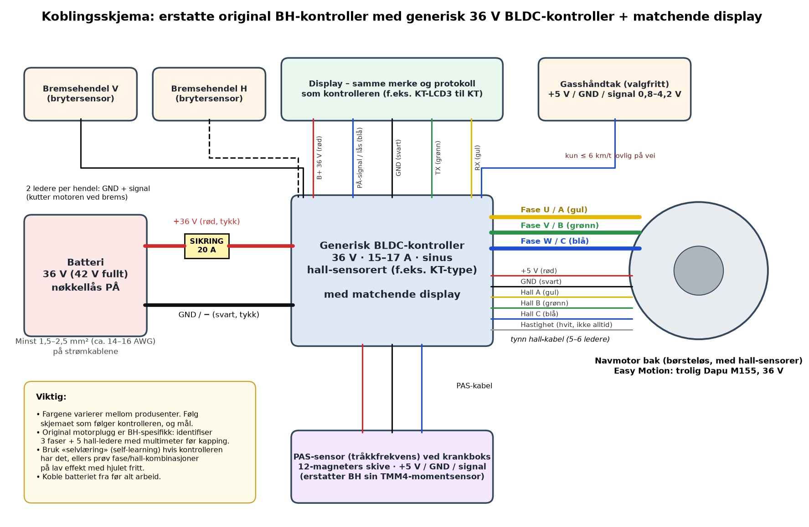
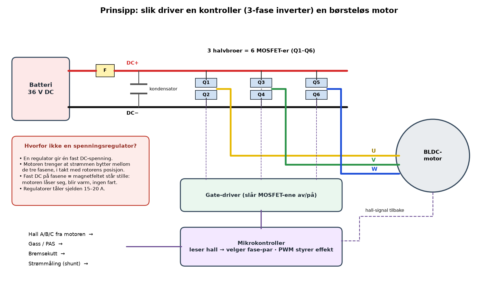

Kort fortalt
Hvilken sykkel og hvilket system
Jeg fant ingen modell som heter nøyaktig «Easy Motion 2». Det mest sannsynlige er BH Easy Motion i Neo- eller Evo-familien (f.eks. Evo Cross, Evo Street, Evo City) med baknavmotor. Sjekk merket på motoren for å være sikker.
- Produsent
- BH Bikes (Spania), merkenavn Easy Motion / BH Emotion
- Spenning
- 36 V (kjent fakta, BH-manual 2012 og EBR 2015)
- Batteri
- Li-ion, 36 V. Evo 27.5 (2015): 11,6 Ah / 418 Wh, Samsung-celler. Senere: 12 Ah / 432 Wh
- Motor
- Børsteløs girnavmotor bak, 350 W merket, begrenset til 250 W i EU. Trolig Dapu M155 (forum: merking «M155 CN3614 (36V)»)
- Sensor for tråkk
- Momentsensor TMM4 ved høyre bakgaffel, rett innenfor minste drev. Ikke vanlig magnet-PAS
- Hastighetssignal
- Kommer fra motoren selv (ikke eikemagnet)
- Kontroller
- Inne i skrårøret over batteriet, BH-spesifikke kontakter
- Display
- BH LCD med fjærkontakter i holderen. Seriell kommunikasjon med BH-egne meldinger og sjekksum
- Usikkert
- Nøyaktig modellår, kontrollerversjon (V1/V2) og pinnefordeling i motorpluggen

Sikkerhet før du starter
- Ta ut batteriet før du kobler fra eller til noe, og før all kabelarbeid.
- Kortslutt aldri batteripolene. Et Li-ion-batteri kan levere svært høy strøm og ta fyr.
- Åpne ikke batteriet og ikke rør BMS-en (batteristyringen). Det er fare for brann.
- Er batteriet hovent, varmt, lukter brent eller har vært i vann: slutt å bruke det og lever det til forhandler.
- Lad på et ikke-brennbart underlag, med tilsyn, og bare med original lader.
- Jeg beskriver ikke hvordan man omgår tyverisikring eller batterilås. Har du mistet nøkkelen, gå til forhandler med kvittering.
Del 1a: Når assistansen ikke virker
Gå gjennom rekkefølgen under. Start med det enkle. Test etter hvert steg.
Feilsøkingsflyt: Slår displayet seg på? Hvis nei, sjekk batteri, nøkkel og kontakter (steg 1–4). Deretter: viser det feilkode? Hvis ja, slå opp koden i tabellen under. Hvis nei, eller etter at koden er slått opp: sjekk bremser, sensor og kabler (steg 5–9). Fortsatt feil: BH-verksted.
-
Lad batteriet helt
Bruk original lader. La det stå minst 30 minutter selv om det ikke ser ut som noe skjer. Et batteri i dvale (BMS-beskyttelse) våkner ofte når laderen kobles til. Sjekk LED-indikatoren på batteriet.
-
Nøkkel og låsing
Batteriet skal klikke helt på plass, og nøkkelen skal stå i kjørestilling. Et batteri som sitter litt løst gir ingen strøm eller strømbrudd på humpete vei.
-
Rens kontaktene på rammen
Ta ut batteriet. Rens de to store polene og de små kontaktene på holderen i rammen med elektronikk-kontaktspray som er trygg for plast. Sjekk at fjærkontaktene spretter helt ut. Batterisiden: tørk forsiktig og se etter brannmerker.
-
Sjekk displayet og holderen
Ta av displayet. Trykk lett på hver fjærpinne (f.eks. med viskelær). Pinner som ikke spretter tilbake gir feil 13. Rens med en lett fuktet klut med isopropanol. Ikke stram holderen for hardt.
-
Start uten fot på pedalen
Momentsensoren kalibreres ved oppstart. Trykk på pedalen under oppstart gir feil 14. Slå av, ta foten bort, slå på igjen.
-
Bremsebrytere
Hvis motoren aldri gir hjelp, eller et varseltrekant eller bremsesymbol vises hele tiden, kan en bremsebryter henge. Slå av, koble fra én bremsekontakt om gangen ved styret, og test igjen. Smør hendelen, bytt bryter om den henger.
-
Kontaktene ved styret og motoren
Ved styret: to små kontakter for bremser, én større skrukontakt for display (og gass). Ved bakre kjedestag: motorkontakten. Koble fra, rens, la tørke, koble til med pilene på linje.
-
Momentsensoren (TMM4) ved bakhjulet
Sitter rett innenfor minste drev. Tørk platen mellom sensor og kjede. Kjedevoks og fett her kan stoppe assistansen. De to små skruene skal bare være lett tiltrukket (ca. 1 Nm). På nyere Evo må sensoren ut for å nå skruene.
-
Fartsvisning
Viser displayet 0 km/t mens du sykler, går displayet i dvale og assistansen faller ut. Fartssignalet kommer fra motoren. BH sin feilsøkingsguide sier da: sjekk motorkabel, ellers bytt motor.


Feilkoder på displayet
| Kode | Betyr | Hva du gjør |
|---|---|---|
| 01 / 02 / 10 | Overstrøm | Sjekk motorkontakten. Vedvarer det: kontrolleren |
| 03 | Momentsensor (TMM) | Rens platen, sjekk skruer og kontakt. Sensorsignal skal ligge 0,1–3,5 V |
| 04 | Motorfeil | Sjekk motorkontakt og kontroller |
| 05 | Motorsensor (hall) | Rens motorkontakten. Vedvarer det: motor eller kontroller |
| 08 | Lavt batteri | Lad. Sjekk at batteri og kontakter sitter fast |
| 09 | Motor blokkert | Sjekk motorkabelen der den går ut av akselen |
| 11 / 12 | Overoppheting | La systemet kjøle seg ned |
| 13 | Kommunikasjon | Display, displayholder, kabel. Rens fjærpinnene |
| 14 | Pedalfeil | Start på nytt uten fot på pedalen |
| 15 | Sensorfeil | Juster momentsensoren (verksted) |
Kilde: BH Emotion brukermanual (PDF datert 2. aug. 2012) og BH «Ebike diagnosis flows» (PDF datert 28. mai 2015). Kodene kan variere litt mellom modellår.
Målinger med multimeter

| Måling | Forventet | Hvis ikke |
|---|---|---|
| Batteri, fulladet | 41–42 V | Under 40 V rett etter lading: lader eller batteri |
| Batteri, i bruk | 33–40 V | Under ca. 33 V: lad |
| Batteri, 0 V på polene | BMS i dvale eller nøkkel av | Sett på lader 30 min. Fortsatt 0 V: verksted |
| Batteri under ca. 30 V | Dyputladet | Ikke tving lading. Lever til batterispesialist |
| Laderens utgang | Ca. 42 V uten last | Noen smarte ladere viser 0 V før de ser et batteri |
| Momentsensor i ro | 0,6–2 V (BH testverktøy) | Utenfor: kalibrer eller bytt sensor (verksted) |
Spenningene gjelder et vanlig 36 V Li-ion-batteri med 10 celler i serie (4,2 V per celle fullt). Nøyaktige BMS-grenser for BH-batteriet er ikke publisert, så de nederste tallene er estimater.

Del 1b: Justere bakgiret

-
Sjekk girøret (hangeren)
Se bakfra. Girøret og bakgiret skal henge rett ned, parallelt med drevene. Bøyd girøre gir dårlig gir uansett justering. Bytt det eller få det rettet på verksted.
-
Sett giret på minste drev
Gir ned til minste drev (tyngste gir). Skru strammeskruen (barrel adjuster) helt inn, og så ut én omdreining.
-
Juster H-skruen
Øvre trinse skal stå rett under minste drev. Skru H-skruen inn for å flytte giret innover, ut for å flytte det utover.
-
Stram vaieren
Løsne vaierklemmebolten. Trekk vaieren stramt med hånden. Trekk til bolten (vanlig 5–7 Nm, sjekk girets merking).
-
Juster L-skruen
Gå til største drev. Øvre trinse skal stå rett under største drev, og giret skal ikke kunne gå inn i eikene. Skru L-skruen inn hvis det går for langt.
-
B-skruen
På største drev: avstanden mellom øvre trinse og drevtennene skal være ca. 5–6 mm. Skru B-skruen inn for mer avstand. Sjekk manualen for ditt gir.
-
Indeksering
Gir ett klikk opp fra minste drev. Går ikke kjedet over: skru strammeskruen ut en kvart omdreining. Hopper det to drev: skru inn. Ulyder: finjuster i kvarte omdreininger.
-
Test
Gå gjennom alle gir, opp og ned, først i stativ, så under last med motoren av. Prøv så med assistanse.



Del 2: Kan et annet display styre motoren?
| System | Protokoll | Kontakt | Med BH? |
|---|---|---|---|
| BH Easy Motion (Neo/Evo) | Seriell, BH-egen, sjekksum | Fjærpinner i holder + BH-kabel | Original |
| KT (KT-LCD3/4/8) | KT seriell (UART) | Julet/Higo 5-pin | Nei |
| Bafang DP-serie | UART eller CAN, etter modell | Higo 5-pin | Nei |
| S866 / Lishui m.fl. | Egne UART-varianter | SM / Julet | Nei |
| «Easy Ride» | Ukjent. Ett merke med navnet bruker Bafang CAN | Ukjent | Nesten sikkert nei |
| «Spark» / Sparke | Ukjent. Sparke er norsk elsparkesykkel, 60 V | Ukjent | Nei, feil spenning |
- Fakta: BH-displayet kommuniserer serielt med kontrolleren. Et åpent verktøy (pye-motion, GitHub, 2017) leser disse meldingene og regner sjekksum.
- Fakta: BH-kontrolleren håndterer også TMM4-momentsensoren. Et fremmed display kan ikke erstatte det.
- Usikkert: Hvilken «Easy Ride» og «Spark» du har. Les merket på displayet eller kontrolleren, så kan jeg sjekke nøyaktig.
- Eneste display som passer: BH sitt eget, f.eks. V4 sidedisplay (delenr. 386128300), som BH-forhandlere selger.
Løsning: koblingsskjema for ny kontroller
Hvis BH-kontrolleren er død og ikke kan skaffes, kan du bytte hele styringen. Motoren er en vanlig børsteløs motor med hall-sensorer. Den bryr seg ikke om hvilken kontroller som driver den. Displayet må da følge den nye kontrolleren.

| Del | Krav | Merknad |
|---|---|---|
| Kontroller | 36 V, 15–17 A, sinus, hall-sensorert | Gjerne med selvlæring av fase/hall-rekkefølge |
| Display | Samme merke som kontrolleren | F.eks. KT-LCD3 til KT. Kjøp i sett |
| PAS-sensor | Tråkkfrekvens, 12 magneter | Erstatter TMM4. Monteres ved krankboks |
| Bremsehendler | Med bryter (2 ledere) | Samme kontakttype som kontrolleren |
| Sikring | 20 A, i pluss-ledningen | Nær batteriet |
| Kabler | 1,5–2,5 mm² for batteri og faser | Bruk riktige plugger, ikke tvinn sammen |
| Gass (valgfritt) | Hall-gass | Bare opptil 6 km/t lovlig på vei |
-
Dokumenter alt
Ta bilder av alle kontakter og ledninger før du kobler fra. Merk hver ledning med tape.
-
Finn fasene
Motorkabelen har tre tykke ledere. Mål motstand mellom hvert par med batteriet ute: alle tre par skal vise like lav verdi.
-
Finn hall-lederne
Fem tynne ledere: +5 V, GND og tre signaler. Med 5 V tilført skal hvert signal veksle mellom ca. 0 og 5 V når du dreier hjulet sakte.
-
Lag overgang, ikke kapp originalen
Lag en adapterkabel mellom BH-pluggen og den nye kontrolleren. Da kan du gå tilbake.
-
Koble alt, sikring sist
Følg skjemaet som følger kontrolleren. Fargene varierer mellom produsenter.
-
Første test
Hjulet fritt i stativ. Lav assistanse. Bruk selvlæring hvis kontrolleren har det. Ellers prøv fase/hall-kombinasjoner til motoren går jevnt og stille og trekker lite strøm.
-
Still inn grensene
Sett fartsgrense 25 km/t og hjulstørrelse riktig i displayets innstillinger.
Fordeler
- Deler er lett å få tak i
- Billigere enn BH-originaldeler
- Mange innstillinger i displayet
Ulemper
- Du mister momentsensoren og får tråkkfrekvens-PAS
- Kontrolleren må monteres utenpå rammen
- Garantien bortfaller
- Feil kobling kan ødelegge motor og kontroller
Idéen om spenningsregulator
Idéen var å lage en fartskontroll med en spenningsregulator som justerer strømmen inn i de tre fasene. Det vil ikke virke.

- En børsteløs motor har ingen børster som bytter strøm. Kontrolleren må gjøre det, mange hundre ganger i sekundet.
- Hall-sensorene forteller hvor rotoren står. Kontrolleren slår på riktig fasepar i riktig retning, og bytter når rotoren har flyttet seg.
- Seks transistorer (MOSFET-er) i tre halvbroer gjør byttet. Gass eller PAS styrer hvor lenge de er på (PWM), og det gir mer eller mindre kraft.
- En spenningsregulator gir bare én fast likespenning. Fasene får ikke noe roterende felt. Motoren står stille, låser seg og blir varm.
- Strømmen er 15–20 A. Det er høy effekt med fare for brann. Selv erfarne bygger sjelden dette selv.
| Hall A-B-C | Fase + | Fase − |
|---|---|---|
| 1-0-1 | U | V |
| 1-0-0 | U | W |
| 1-1-0 | V | W |
| 0-1-0 | V | U |
| 0-1-1 | W | U |
| 0-0-1 | W | V |
Tabellen viser prinsippet for seks-trinns styring. Den nøyaktige rekkefølgen avhenger av motoren. En ferdig kontroller tar seg av dette.
Lovverk i Norge
Statens vegvesen (lest 18.11.2026): En elsykkel må ha maks 0,25 kW nominell motoreffekt, gi kraft bare når du tråkker, og koble ut ved 25 km/t. Ren motordrift er lov opp til 6 km/t. Ellers er den en moped, med krav om førerkort, registrering og forsikring. En ombygget sykkel som går over disse grensene kan bare brukes utenfor offentlig vei.
Kilder
Bilder: Wikimedia Commons, lisenser oppgitt under hvert bilde. Diagrammene er laget for denne siden.